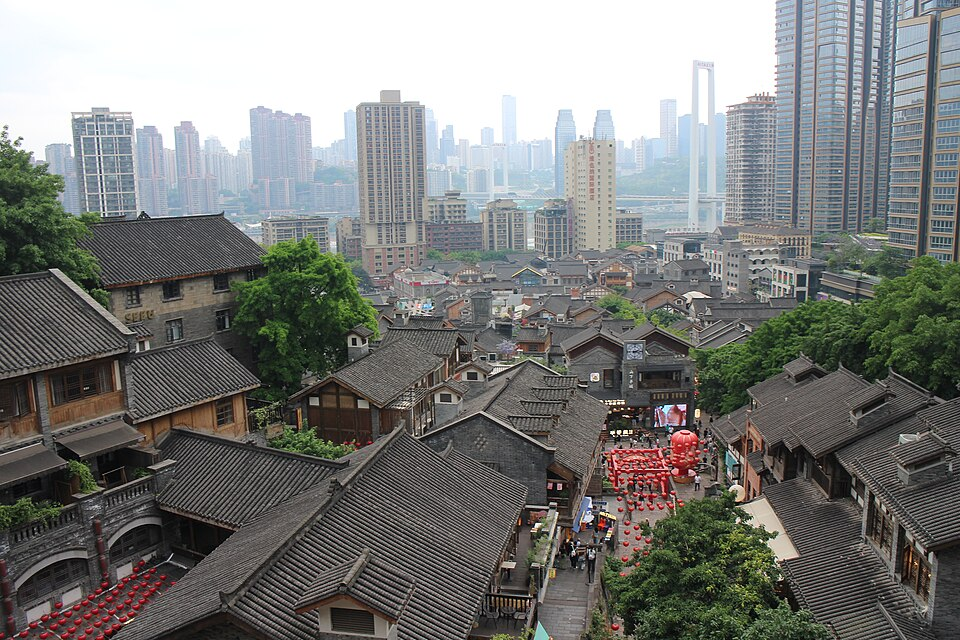
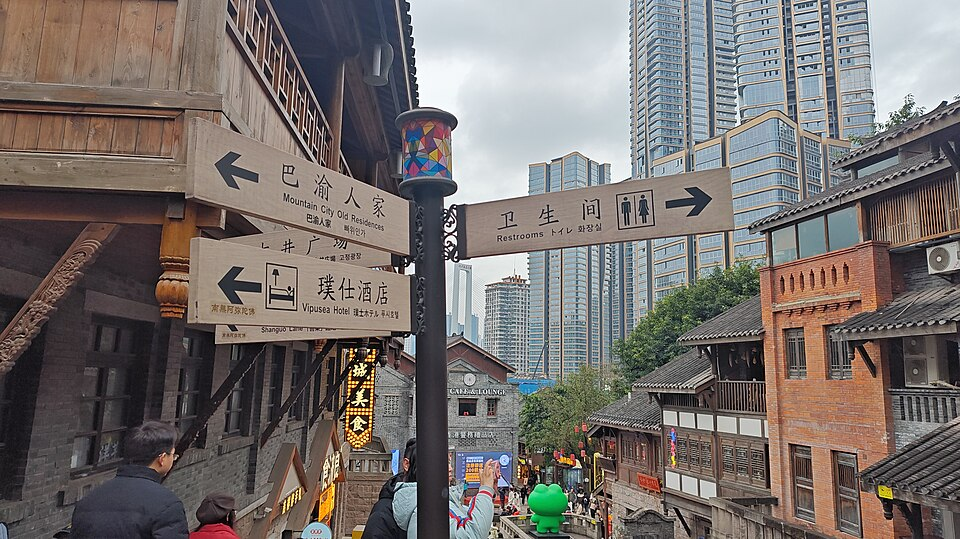
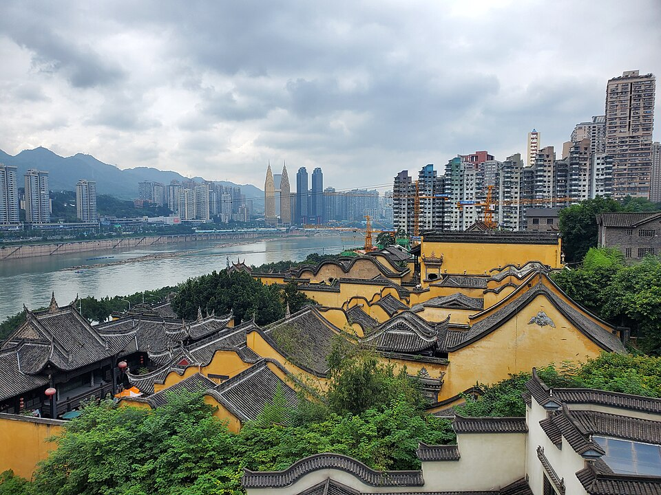
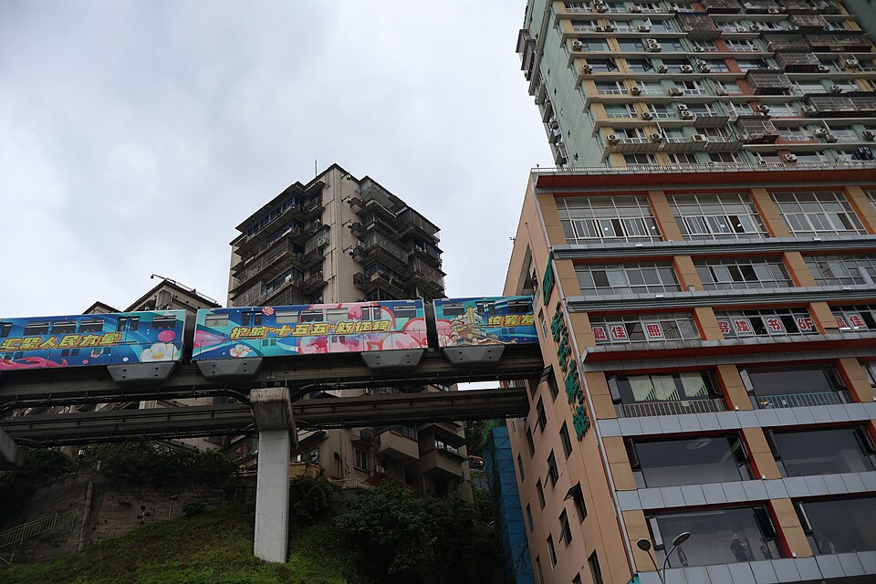
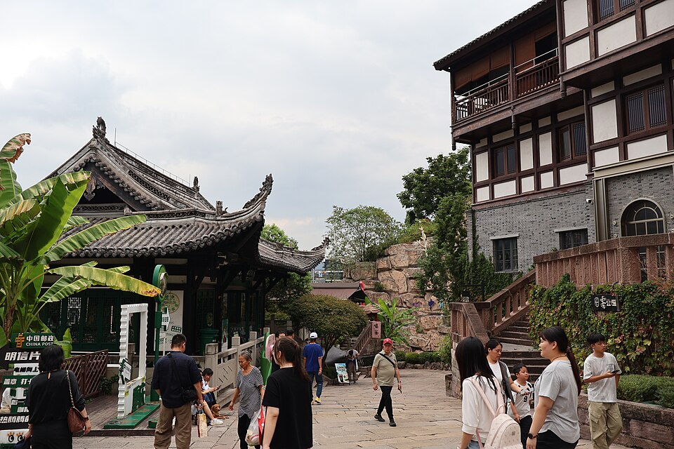
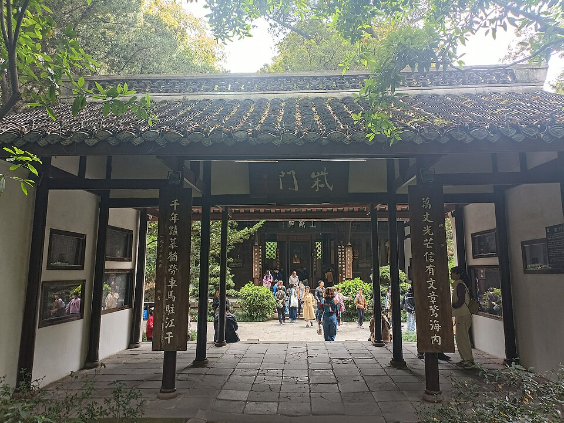
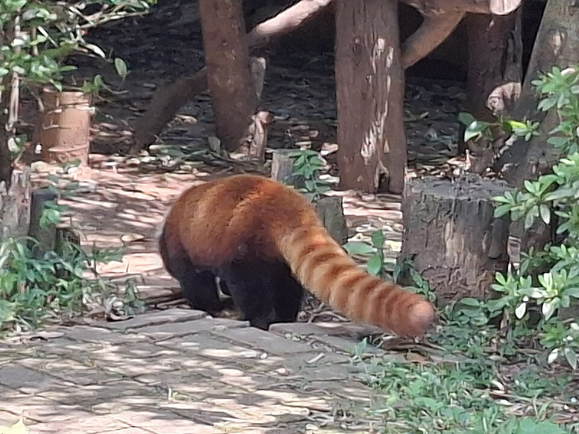

Day 1｜12月8日（二）
台北 → 重慶（晚班，落地後直接入住）
起飛前約 2 小時到機場（估算，一般慣例；19:20 起飛 → 17:20）。國航報到櫃檯開放時間與行李額度：未查到，出發前看航空公司通知。
週二直飛只查到這一班：國航 CA410 TPE 19:20 → CKG 23:05，每週二、三、五、六、日飛，A330-300，飛行約 3 小時 45 分（第三方 flightmapper、AeroRoutes 2026-08-04 一致，尚未對到航空公司官網，訂票前要確認）。
川航 3U3784 松山 19:05 → 22:20（週三、五、日，只有 flightmapper 一個來源），12/8 週二不飛。
週二沒有別的直飛；下一班是 12/9（三）同一班 CA410 或川航 3U3784，要重訂，12/9 的行程整天順延。
導遊型交通指引：
- 23:05 落地後，入境、領行李的時間未查到（估算至少 23:40 才出得來）。地鐵 10 號線末班約 22:30～23:00，搭不到。
- T3 的網約車在抵達廳對面的地下專屬停車區上車（wanderinchina）。
- 機場 → 解放碑約 28 km；OSRM 開車 27 分（無車流），wanderinchina 寫 40～60 分（視交通）。
- 車資兩說：舊指南計程車約 ¥50、30 分；2026 指南計程車 ¥60～120（深夜另加）、滴滴 ¥70～110；自己用去哪兒夜間費率估約 ¥69（估算）。
- 備案：機場快線 K01 ¥15 到解放碑（國泰廣場），運行至末班航班到達後 30 分；官方時刻未查到，要現場確認。
23:40 出來，車程 27～60 分，預計約 00:30～00:45 入住（估算），住宿要有 24 小時櫃檯。
約 00:30～00:45 入住（跨日，時間為估算）。住宿還沒訂，排行程先以解放碑為起點；要能接待台胞證、有健身房（或附近可單次付費）、24 小時櫃檯。候選與房價見查證筆記。
📍 今日相關地圖
Day 2｜12月9日（三）
渝中老街與階梯：解放碑 → 十八梯 → 山城巷 → 湖廣會館 → 戴家巷 → 洪崖洞（日落 17:55）
導遊型交通指引：
- 從解放碑一帶步行約 13 分（OSRM 1041 m；OSRM 不算爬坡，重慶高低差大，實際更久）。


傳統風貌區，渝中區中興路 1 號，較場口站附近（推論）。全年全天開放、免費（攜程）；晚上亮燈較好看（遊記）。遊記建議 2～3 小時含爬坡（年份不明），這裡排約 1.5 小時（09:15～10:45）。
來源：攜程十八梯（二手）。
從北門往下走；逛完要往上走約 806 m 回領事巷接山城巷。豆腐腦、擔擔麵、防空洞火鍋都在風貌區裡。看完整路線與店家 →

十八梯 → 山城巷步行 10 分（OSRM 806 m）。渝中南紀門，中興路至領事巷，幾乎全為梯步；攜程標全年全天開放，整條巷免費未查到明文；建議停留未查到。
來源：攜程山城巷（二手）。
仁愛堂 → 坝坝茶 → 懸崖棧道 → 中興路出口；仁愛堂旁白铁MAKER 有江景露台（單一來源）。看完整路線與店家 →
導遊型交通指引：
- 方案 A 尘香（解放碑新華路）：山城巷 → 尘香步行 1492 m ÷ 80 = 19 分（OSRM，不算爬坡，實際更久）。午餐後尘香 → 湖廣會館步行 1470 m = 18 分（OSRM），13:10 前後出發。
- 方案 B 饭江湖（湖廣會館旁）：山城巷 → 饭江湖步行 2781 m = 35 分；山城巷 → 湖廣會館 2956 m = 37 分（OSRM，坡路實際更久）。


湖廣會館：09:00–18:00，17:00 停止售票入園（攜程）；地址渝中區長濱路芭蕉園1號。票價只有舊遊記「現場約 ¥25」（二手，可能過時），預算不計。東水門大橋免費（推論）；建議停留未查到。
來源：攜程湖廣會館（摘要）。
攜程轉載景區公告：12/7（一）至 12/21（一）全天停運年度修理，預計 12/22 恢復；第二來源未查到，出發前打景區電話 023-68816888 或看公眾號確認。本行程不排索道。
移民博物館 → 禹王宮 → 廣東公所 → 齊安公所；出口搭電梯上東水門大橋拍全景。看完整路線與店家 →
導遊型交通指引：
- 湖廣會館 → 小什字步行 14 分（OSRM 1124 m）。
- 小什字 → 解放碑住宿步行 11 分（OSRM 878 m）；也可在小什字搭 1 號線到較場口（1 站），再步行 10 分。
從住宿步行約 7 分（OSRM 557 m）。位於千廝門一帶、下端接舊鹽碼頭、靠近洪崖洞；開放時間、收費、入口都未查到（搜尋摘要），出發前用高德查。日落 17:55，民用暮光結束 18:21（api.sunrise-sunset.org）。
臨江門 A 口進，步道 24 小時免費，下到洪崖洞底部（晚餐要再爬回臨江支路）；GUAGUAJUN、TOTOMATO 等江景咖啡。傍晚風大帶外套。看完整路線與店家 →

主體免費。燈飾 19:30–23:00 是 2026-04-15 起的資料（洪崖洞公眾號，光明網轉述），12 月時間未查到；22:30 停止入場為二手未證實；有承載量管控。12 月重慶偏陰多雲（5 年 12 月雲量 7～8 成，模型資料），夜景眺望不保證。
來源：光明網 2026-04-12（摘要）。
滄白路 11 樓入口一路下坡；千廝門大橋人行道拍全景。景區免費，黃牛「快速通道」是騙局。看完整路線與店家 →
📍 今日相關地圖
Day 3｜12月10日（四）
往西：兩路口 → 鵝嶺 → 李子壩 → 磁器口（日落 17:55）
導遊型交通指引：
- 從解放碑住宿步行約 10 分到較場口站（OSRM 814 m，不算爬坡）。
- 搭 1 號線往沙坪壩／璧山方向 2 站（七星崗、兩路口），約 6 分（估算，2.9 分／站）。隨到隨搭，日常班距未查到。
- 兩路口站 → 高胖妹小面步行約 3 分（OSRM 252 m）。
高胖妹 → 扶梯步行約 4 分（OSRM 355 m；去哪兒說 3～5 分）。全長 112 m、約 2 分 30 秒（搜尋摘要）。票價約 ¥2／趟（遊客點評，舊；有人說上下各 ¥2），只收現金或公交卡；官方現價未查到。營業時間三說：8:00–20:00（光明網 2026-09，華龍網轉載）、06:45–22:00（去哪兒）；保守用 8:00–20:00。預算不計。
全程 2 分 30 秒；能不能掃碼付款未查到，備零錢或交通卡。看完整攻略 →
導遊型交通指引：
- 1 號線往沙坪壩方向 1 站到鵝嶺，約 3 分（估算）。
- 鵝嶺站 1 號口出，佛圖關公園南門（棧橋入口旁）約 100 m（去哪兒點評，舊）。
抵達先去遊客服務點預約，排不到就走計畫B。棧橋 9:00–18:00、免費（新華網 2025-11-12，本地寶 2026-10-28）；全長 460 m。實名預約：微信公眾號「渝中公園」或小程序「鵝嶺公園」，持台胞證者要到遊客服務點預約，成功後憑 QR 進入；服務點位置與當天名額未查到。全線（棧橋＋鵝嶺公園＋二廠＋三層馬路＋李子壩）約 2.5 小時（本地寶，二手）。週一停運只有摘要，12/10 是週四不受影響。出口在鵝嶺公園爬山廊旁。
出發前在「渝中公園」公眾號查台胞證的預約方式與名額。
佛圖關南門進 → 鵝嶺公園出 → 二廠（愛情天台）→ 北門下石階約 15 分到李子壩。格柵地面小心手機、零錢掉下去。看完整路線與店家 →
B 計畫B｜佛圖關公園走到鵝嶺公園，再往李子壩 🎫 棧橋預約不到、或當天沒名額時


免費；停留排 20～25 分（gochinatravel 2026 寫 20～40 分，因午餐與下一段時間縮短）；列車約 3 分一班（遊記）。官方開放時段未查到。拍攝時段沒有一致結論（有說清晨或傍晚人少，有說下午 3～5 點光線柔，10:00–15:00 人最多）。2 號線李子壩站 1 號出口 → 觀景台約 1 分。
來源：gochinatravel（二手）。
先到平台拍列車穿出；13:30 進站在月台看軌道進樓，上車坐第一節窗邊。穿的是住宅樓，保持安靜。看完整攻略 →
導遊型交通指引：
- 李子壩站搭 2 號線往魚洞／天堂堡方向 2 站（佛圖關、大坪），在大坪換 1 號線。
- 1 號線往大學城／璧山方向 10 站到磁器口。
- 全程約 35 分＋換乘（估算：用遊記「14 站 40 分」換算每站約 2.9 分）；實際分鐘請用高德或重慶軌道 App 確認。
- 磁器口站 → 古鎮步行約 13 分（OSRM 1071 m）；所以約 14:20 才到古鎮。


街區免費；內部個別景點另收（鍾家大院、寶輪寺各約 ¥5，舊資料）。開放時間兩說：全天／10:00–20:00（去哪兒、大河票務摘要）；各店約 10:00 後營業（推論）。建議停留 3～6 小時（攜程）。遊記說 12 點後團客變多，下午會擠：日落 17:55 前先拍正街。
來源：去哪兒磁器口（二手）。
1 號口出；下午人多，先走後街再接河街，日落前拍正街；寶輪寺、迎龍門、江邊碼頭。麻花認「陳昌銀」或「陳建平」（有好幾家「陳麻花」）；迎龍門茶館蓋碗茶約 5 元。看完整路線與店家 →
導遊型交通指引：
- 磁器口站搭 1 號線往朝天門方向，14 站到較場口，約 40 分（遊記實測，年份不明），免換乘。
- 較場口 → 解放碑住宿步行約 10 分（OSRM 814 m）。
📍 今日相關地圖
Day 4｜12月11日（五）
重慶 → 成都（高鐵），下午入住匯航岷源酒店（成都日落 18:02）
導遊型交通指引：
- 解放碑住宿步行約 10 分到較場口站（OSRM 814 m）。
- 1 號線往大學城／璧山方向 11 站到沙坪壩，約 31 分（估算，2.9 分／站）。
- 沙坪壩地鐵站與高鐵站同一樞紐；站內走到閘機的時間未查到，建議提早 60～90 分到站（含閘機與早高峰）。
- 備案：計程車解放碑 → 沙坪壩站 OSRM 15.3 km、17 分（無車流），車資未查到。
G8612 沙坪壩 10:30 → 成都東 11:32（1 時 02 分），二等座 ¥164（12306，用 2026-11-27 同為週五代查；12/11 的票約 11/27 11:00 開賣，開賣後要再查一次）。用台胞證在 12306 買票，憑原件刷證走自助閘機進出站，不必取紙票（12306 官方問答）；註冊所需資料未查到。
錯過這班：沙坪壩 → 成都東每天約 17 班（11/27 查），例 G8646 10:49 → 12:09（¥156）、G8620 11:25 → 12:27、G8618 12:05 → 13:07；12/11 實際班次開賣後以 12306 為準。也可改從重慶西發車（較遠、要轉乘）。
來源：12306 實名制、12306 餘票 API（動態，不存檔）。
票價 ¥164 列入預算。
導遊型交通指引：
- 成都東站（地鐵站名「成都東客站」）與鐵路出站層共構，下到地鐵層搭 7 號線 6 站到火車南站。
- 火車南站換 1 號線往北（五根松反方向，往韋家碾方向）2 站（桐梓林、倪家橋）。共 8 站、1 次轉乘，分鐘與票價未查到，約 40 分（估算，不含出站）；另加出站約 10 分（估算）；實際請用高德確認。
- 倪家橋站走到盧記約 6 分（510 m，倪家橋 E 口，1214 筆記）；約 12:30 到站，午餐排 12:45。
- 備案：計程車成都東 → 飯店 OSRM 8.8 km、約 11 分（無路況），車資未查到。
匯航岷源酒店（四川大學望江校區玉林廣場店），武侯區二環路南二段21號1棟1層；14:00 後入住、14:00 前退房，櫃檯 24 小時；早餐自助 ¥36／人 07:30–09:30（wingon，單一來源）。公司負擔、未訂。14:00 前能否寄放行李未查到，可打店家電話 +86-28-85286888。台胞證接待資格未查到。入住方式看訂房訊息（不放在公開網站）。
來源：永安旅遊（二手）。
導遊型交通指引：
- 飯店門口叫滴滴或計程車，到杜甫草堂約 8.6 km、約 10 分（OSRM 開車，無路況）；車資未查到。
- 地鐵走法與分鐘未查到。


杜甫故居復建，茅屋、花徑、盆景園（使用者指定想去）。攜程：09:00～18:00、17:00 停止售票；¥50 起；攜程 4.7（9,157 則，2026/11 查）。地址：青華路 37 號。官方開放時間未取得（官網網域已失效），另一說 08:30～18:30 是 2026 中秋國慶的延時，不是冬季。
官方微信服務號預約；現場可憑港澳台通行證到服務窗口購票（搜尋摘要），台胞證條款未明寫。出發前看官方公眾號。
15:00 到可以逛約 2 小時；12/11 的日落 18:02。
茅屋 → 花徑紅牆 → 大雅堂 → 中軸線工部祠。附近有米其林必比登的陈麻婆豆腐(旗舰店)。看完整路線與店家 →
導遊型交通指引：
- 杜甫草堂 → 飯店一帶約 7.3 km、約 10 分（OSRM 開車，無路況）；車資未查到。
📍 今日相關地圖
Day 5｜12月12日（六）
三星堆一日（當天來回；成都日落 18:03）
導遊型交通指引：
- 飯店步行約 8 分到倪家橋站（OSRM 669 m，座標待高德核對）。
- 1 號線往南 2 站到火車南站換 7 號線 6 站到成都東客站（共 8 站、1 次轉乘）；總時間未查到，約 45 分（估算）。地鐵首班時間未查到。
- 備案：計程車飯店 → 成都東 OSRM 13.3 km、約 13 分（無路況），車資未查到。
- 約 08:33 到成都東，留約 30 分進站過閘機；45 分是估算（8 站 10.7 km＋1 次轉乘＋候車）。
D1920 成都東 09:04 → 廣漢北 09:22（18 分）。錯過 → G8660 09:56 → 10:14，晚 52 分，抵館約 10:40 以後（搭計程車；13 路更晚）。12306 查的是 2026-11-28（六）代查，12/12 的票約 11/27～28 開賣，開賣後要再查；二等座 ¥18～22（多數 ¥20，單班票價筆記未逐班記）。用台胞證買票、刷證進站（同 Day 4）。
其他班次（11/28 代查，成都東 → 廣漢北）：G8690 07:21 → 07:39（最早，抵達約 07:40 可趕 08:30 開館）、G8660 09:56 → 10:14、C5688 10:27 → 10:45。C6372 08:27 → 三星堆站 08:45（C 字頭二等 ¥25）：三星堆站離遺址約 5 km，接駁未查到，不建議。
來源：12306 餘票 API（動態，不存檔）。
預算列入 ¥40。
導遊型交通指引：
- 計程車：OSRM 7.5 km、約 10 分（無路況）；遊記說打車約 15 分（單一來源）；車資未查到。成都 → 廣漢全程計程車（約 40 km）車資與時間未查到，不建議。
- 13 路公交：官網寫全程 38 分（站數 13 與 10 兩說）；首末班、票價、班距未查到，出發前用高德查「廣漢13路」。搭 13 路約 10:10 進館。


先在 12/7 20:00 約館票，約到再買高鐵票（或確認車票可退）。搭計程車約 09:45 進館、搭 13 路約 10:10 進館。陳列館（新館）08:30–18:00，17:00 停止入館；12/12 非延時開放期（推論）。普通票 ¥72（官網）。實名預約：官網、微信公眾號或「三星堆博物館」小程序；每晚 20:00 放 5 天後的票（二手），12/12 的票約 12/7 20:00 開放；無現場散客售票窗口，線上售罄就沒票。建議停留 3～4 小時（新館 2～2.5、老館 0.5～1；單一地接文章）。
台胞證能否線上預約未查到：中文官網寫先線上預約再帶證件換票；英文官網寫外國人帶護照到遊客中心現場買，兩說矛盾（discrepancies #8）。館方電話 0838-5651526（2025 英文介紹頁，未核實）。老館 2026-04 部分維修（單一來源，待證實）。
來源：三星堆博物館官網。
熱門日子會約滿；先確認台胞證預約方式。
巍然王都（青銅大立人、金面具）→ 2 樓天地人神（青銅神樹、縱目面具），人多時先上 2 樓。看必看文物與館內吃的 →
導遊型交通指引：
- 博物館 → 廣漢北站：計程車 10～30 分（OSRM 10 分；遊記約 30 分、車難叫）；13 路 38 分。
- 廣漢北 → 成都東高鐵 18～19 分（11/28 代查）。一定要搭 G2241 15:13 → 15:31，錯過搭 D1931 16:09 → 16:27（晚 56 分）；再下一班 G1833 16:56 → 17:14。末班 G3441 21:12 → 21:30（其次 D1903 20:59、G3781 20:31），時間很寬。
- 成都東 → 飯店同去程（地鐵約 45 分估算，計程車約 13 分）。
📍 今日相關地圖
Day 6｜12月13日（日）
熊貓基地（上午）＋市區（成都日落 18:03）
導遊型交通指引：
- 飯店步行約 8 分到倪家橋站（OSRM，座標待高德核對）。
- 1 號線往北 1 站到省體育館，換 3 號線往北 11 站到熊貓大道（共 12 站，站序見 OSM 站表）；首班與每站分鐘未查到，全程約 40 分（估算，wanderinchina 寫市區出發約 40 分，起點不明）。06:50 出發約 07:38 到熊貓大道，目標約 08:00 到南門。
- 熊貓大道站 A 口出站，換 408 路擺渡車到南門（官網；wanderinchina 寫 D025，以官網為準）；首末班、班距、票價未查到（wanderinchina 摘要 ¥2），錯過或等太久就改計程車（OSRM 約 27 分）。
- 備案：計程車飯店 → 基地 OSRM 20.4 km、約 27 分（無路況），車資未查到（官網：春熙路 → 基地約 ¥40、25～35 分）。


11～2 月：上午票入園 8:00～12:00、下午票 12:00～16:30，17:30 開始清園（官網）。成人 ¥55；全員線上實名預約，最早提前 14 天（12/13 約 11/29 開放，推算），當日額度賣完為止；台胞證可（官網列「台湾居民来往大陆通行证」原件刷證入園）。園內觀光車 ¥30／人、當日不限次（官網，預算不計；wanderinchina 寫 ¥10，以官網為準）。
熊貓最活躍約 07:30～09:30（二手），冬季 8:00 才開園；建議先搭觀光車到山頂別墅區再往下逛，快線約 2 小時，一般 3～4 小時，12:00 前離園（研判）；11:15 前走到南門（趕 11:30 離開的交通）。12/13 週日，全園無公休（局部週一閉館不受影響）。
開放後就訂上午票（研判，週日）。
花花在南門旁的幼年大熊貓別墅；上面寫的「先上山頂」會把她排到最後，想先看就 08:00 進南門先走。西門新區人少。看完整路線與園內吃的 →
導遊型交通指引：
- 南門搭 408 路擺渡車回熊貓大道站。
- 3 號線往南 8 站到春熙路（動物園、昭覺寺南路、駟馬橋、李家沱、前鋒路、紅星橋、市二醫院、春熙路）；分鐘未查到，估算約 27 分：用 12 站約 40 分（每站約 3.3 分）× 8 站，再加擺渡車與走到站的時間，12:15 前後到春熙路。
導遊型交通指引：
- 往西步行約 25 分（OSRM foot 2035 m）。
- 不想走：計程車約 1.7 km、約 2 分（OSRM 開車，無路況）；地鐵走法未查到。
成都的城市歷史，藏品近 20 萬件（使用者指定想去）。週日 09:00～17:00、16:30 停止入館（官網；到 20:30 只有週五、六）；免費、要提前預約；攜程 4.8（5,479 則，2026/11 查）。地址：青羊區小河街 1 號。這裡排約 2 小時（建議停留未查到）。
台胞證能不能線上預約未查到，出發前看官方公眾號。
2026 暑期公告寫週一固定閉館（冬季常規未取得）；12/13 是週日，有開。
古代篇有鎮館之寶石犀、經穴漆人；14:30 免費講解約 1.5 小時（單一來源），參加會接不上 15:45 的小名堂，可改聽公眾號免費語音。附近酥小蒙牛肉餅（¥9）。看樓層與店家 →
計程車約 7 分（OSRM 5.3 km，無路況）；步行要 62 分（OSRM foot 4929 m），不建議；地鐵走法未查到。選 B 已在飯店就略過。日落 18:02～18:03。